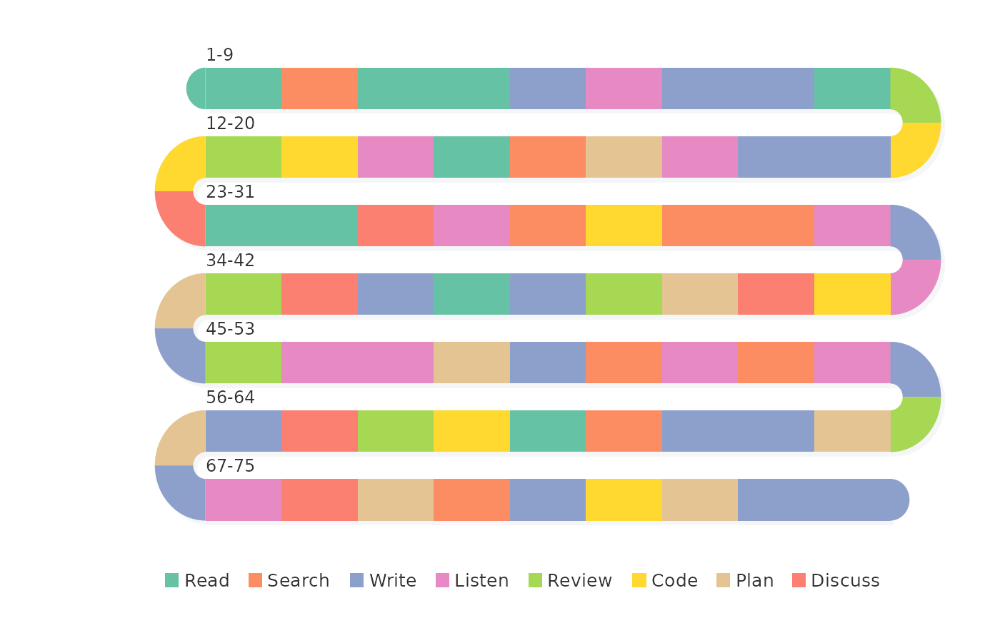
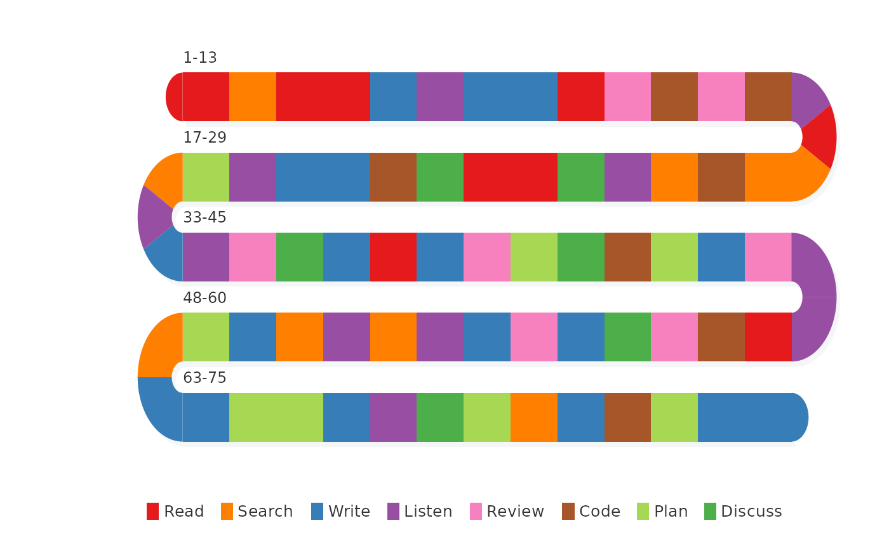

Displays a state sequence as colored blocks flowing through a serpentine (boustrophedon) layout. Each block represents one time point colored by its state. Blocks flow continuously through both bands AND arcs, wrapping a long sequence into a compact multi-row display.
Usage
sequence_snake(
sequence,
states = NULL,
colors = NULL,
rows = NULL,
band_height = 28,
band_gap = 18,
plot_width = 500,
margin = c(top = 30, right = 10, bottom = 50, left = 80),
orientation = "horizontal",
start_from = "left",
flow = c("natural", "snake"),
show_labels = TRUE,
show_legend = TRUE,
show_numbers = FALSE,
show_state = FALSE,
state_size = 0.35,
show_ticks = FALSE,
tick_labels = NULL,
transition_labels = NULL,
transition_pos = NULL,
tick_color = "#333333",
tick_length = 5,
tick_size = 0.4,
style = c("block", "rug"),
band_color = "#3d3d4a",
rug_opacity = 0.9,
jitter = 0,
border_color = NA,
block_labels = NULL,
band_labels = NULL,
title = NULL,
background = "white",
shadow = TRUE,
text_size = 0.5,
legend_text_size = 0.8
)Arguments
- sequence
Input in flexible formats:
Vector: character, integer, or factor vector of states.
Data.frame: first character/factor column is used.
Comma-separated string:
"A,B,C,A"is split automatically.List: unlisted to a vector.
NA values are dropped with a warning.
- states
Character vector of unique states in desired order. If
NULL, derived fromunique(sequence).- colors
Named character vector of colors keyed by state, or an unnamed vector recycled to match
states. IfNULL, a built-in qualitative palette is used.- rows
Integer, number of serpentine rows. If
NULL, auto-calculated targeting approximately 10 blocks per band.- band_height
Numeric, height of each band in pixels (default 28).
- band_gap
Numeric, gap between bands (default 18).
- plot_width
Numeric, width of each band (default 500).
- margin
Named numeric vector with top, right, bottom, left margins.
- orientation
Character,
"horizontal"(default) or"vertical".- start_from
Character,
"left"(default) or"right".- flow
Character,
"natural"(default) or"snake"."natural"reads all bands left-to-right;"snake"uses alternating boustrophedon direction. Default"natural".- show_labels
Logical, show position range labels per row (default
TRUE).- show_legend
Logical, draw color legend (default
TRUE).- show_numbers
Logical, print small position numbers inside blocks (default
FALSE).- show_state
Logical, print the state name inside each block (default
FALSE).- state_size
Numeric, text size for state labels (default 0.35).
- show_ticks
Logical, draw ruler-style tick marks at block boundaries outside the bands (default
FALSE).- tick_labels
Character vector of labels for evenly spaced ruler marks within each band (e.g.,
month.abbfor monthly ticks). Impliesshow_ticks = TRUE.- transition_labels
Character vector of date labels for state transition points (e.g.,
c("Oct 2017", "Apr 2019")). One label per transition (length = number of state changes).- transition_pos
Numeric vector of fractional block positions for transition labels (e.g.,
c(6.5, 24.3)). When provided, labels are placed at exact interpolated positions along the serpentine path rather than at state-change boundaries.- tick_color
Color for tick marks (default
"#333333").- tick_length
Numeric, length of tick marks in pixels (default 5).
- tick_size
Numeric, text size for tick labels (default 0.4).
- style
Character,
"block"(default) or"rug"."block"fills the full band height with colored blocks."rug"draws thin colored tick marks on a dark ribbon, similar toactivity_snake.- band_color
Character, band ribbon color for rug mode (default
"#3d3d4a").- rug_opacity
Numeric 0-1, opacity of rug tick marks (default 0.9).
- jitter
Numeric 0-1, vertical jitter as fraction of band height (default 0). When
> 0, tick marks scatter vertically across the band instead of sitting at a fixed position.- border_color
Color for thin borders between blocks, or
NAfor no borders (defaultNA).- block_labels
Optional character vector of labels to display inside each block (same length as
sequence). Overridesshow_numbers.- band_labels
Character vector of labels to display centered below each band (e.g., year labels). Length must equal
rows.- title
Optional character string for plot title.
- background
Background color (default
"white").- shadow
Logical, draw drop shadows (default
TRUE).- text_size
Numeric, text size multiplier for block labels (default 0.5).
- legend_text_size
Numeric, legend text size (default 0.8).
Examples
set.seed(42)
verbs <- c("Read", "Write", "Discuss", "Listen",
"Search", "Plan", "Code", "Review")
seq75 <- sample(verbs, 75, replace = TRUE)
sequence_snake(seq75)

# Custom colors
cols <- c(Read = "#E41A1C", Write = "#377EB8", Discuss = "#4DAF4A",
Listen = "#984EA3", Search = "#FF7F00", Plan = "#A6D854",
Code = "#A65628", Review = "#F781BF")
sequence_snake(seq75, colors = cols, rows = 5)
